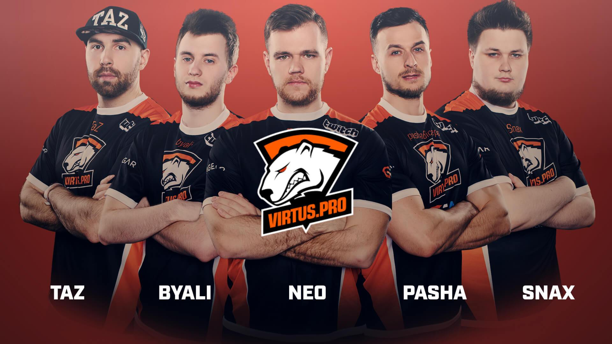

Jarosław Jarząbkowski played in Polish amateur Counter-Strike 1.6
teams until 2010. In February 2010 he joined Frag eXecutors and took
3rd place at World Cyber Games 2010.
In 2011. Pasha took 1st place at the last Intel Extreme Masters VI
tournament in CS 1.6 and won World Cyber Games 2011 with his team
ESC Gaming.
In 2012. PashaBiceps started playing the newly released
Counter-Strike: Global Offensive. In 2013, he joined the Universal
Soldiers team.
In 2014, along with Janusz "Snax" Pogorzelski, Pawel "byali" Bielinski, Filip "NEO" Kubski and Wiktor "TaZ" Wojtas, he joined the Virtus.pro team. In March of the same year, the team took 1st place in the EMS One Katowice 2014 global tournament. Between 2014 and 2017, the team ranked high in a many global championships. At the end of 2018. Jarosław left the actively playing Virtus.pro squad. In 2019. Pasha permanently left the team, retiring from playing CS:GO profesionally.

Although Pasha is not currently a member of any professional team,
he is known and liked by players from all over the world. In 2019,
he was chosen to bring the trophy to the stage at the IEM Major
tournament in Katowice as "the person who has already lifted the
trophy there once".
PashaBiceps currently plays for a semi-professional Polish team and
hosts live streams on Twitch, which are watched by thousands of
fans.
All tournaments in which Pasha participated and the places taken by his team: link